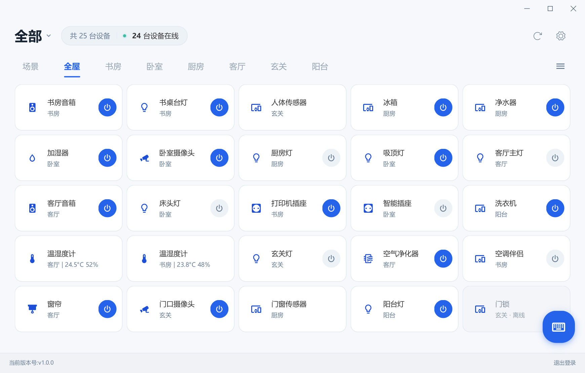

设备卡片直接控制
按家庭和房间查看设备。支持的灯、分路开关和插座可以直接开关，多路面板展示各路状态。
米家电脑版 · Windows 10 / 11
开关灯、查看温湿度、远程看摄像头，或者给小爱音箱发一条文字指令。MijiaDeck 把常用米家操作放到 Windows 桌面和系统托盘里。

桌面控制 / DESKTOP CONTROLS
按家庭和房间查看设备。支持的灯、分路开关和插座可以直接开关，多路面板展示各路状态。
兼容米家摄像头可打开独立预览窗口，支持画质切换、静音、全屏和拖动云台；无需处于同一局域网。实验性功能。
选择要控制的小爱音箱，播放、暂停、切歌和调音量；输入“打开客厅灯”等文字指令，由所选音箱执行。
按设备能力显示亮度、色温、颜色控件。普通灯直接开关，复杂设置仍在米家 APP 中完成。
读取账号中通过米家 APP 创建的手动场景，在电脑上执行。这里不创建、编辑或删除自动化。
温湿度等已支持读数可直接展示。托盘清单按可用控制与读数筛选，支持排序、单列或双列和浮窗位置记忆。
从 GitHub 最新发布页下载 Windows x64 ZIP，选择程序包而不是 Source code。
完整解压，打开 MijiaDeck.exe。保留 _internal 文件夹，不需要另装 Python 或 Java。
用米家 APP 扫码登录，按家庭和房间查看设备；单击托盘图标打开快捷浮窗，右键打开菜单。
| 系统 | Windows 10 1903+ / Windows 11 x64。Win7、Win8 不支持；Win11 完整实机验证仍待补充。 |
|---|---|
| 多路开关、温湿度 | 已有本地实机使用反馈。按设备规格识别分路与读数，不保证同品牌全部型号兼容。 |
| 摄像头 | 已有兼容型号实机预览反馈；传输为实验实现，型号、固件和网络都会影响可用性。 |
| 调光、色温、调色 | 已实现小控制窗并通过模拟设备交互测试；仍需要更多对应型号的实机验证。 |
| 其他设备 | 只显示已支持的操作或读数。部分存在感应、门窗等设备目前仅在主界面展示名称与在线状态。 |
| 语言与平台 | 程序界面目前主要为中文；此网站有中英文介绍。macOS 版在计划中，尚无可下载版本。 |